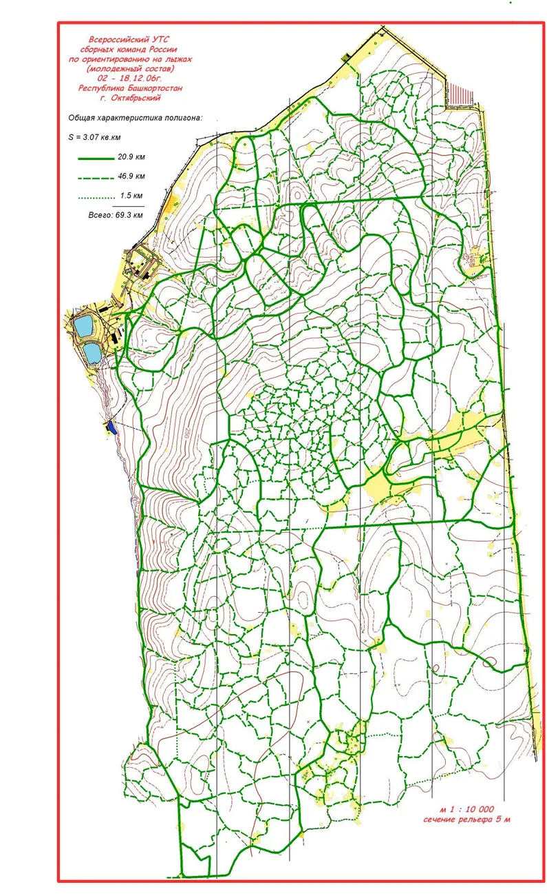
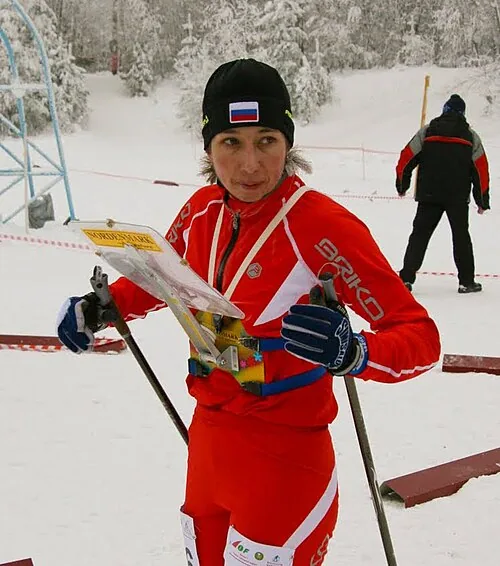
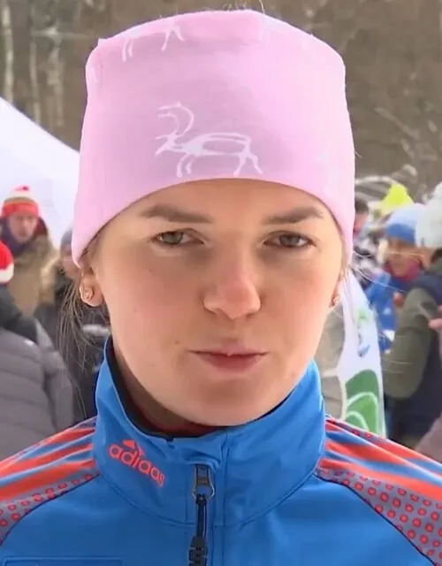

Чемпионат России по ориентированию на лыжах
Российская школа лыжного ориентирования
С 1992 года — от маркированных трасс и первых национальных медалей до мирового успеха и новых поколений сильнейших лыжников.
- Первый чемпионат
- 1992, Рославль
- Легенды
- Корчагин, Власова, Хренников
- Вершина школы
- 8 золотых на ЧМ-2007
- Сегодня
- спринт, лонг, комбинации
- 1992Рославль
- 1993Место неизвестно
- 1994Самара
- 1995Велегож
- 1996Васкелово
- 1998Орехово
- 2000Кыштым
- 2001Кыштым
- 2002Томск
- 2003Октябрьский
- 2004Пермь
- 2006Уфа
- 2007Кыштым
- 2008Горнозаводск
- 2009Барнаул
- 2010Ивановская обл.
- 2011Новоуральск
- 2012Нижний Новгород
- 2013Котовск
- 2014Слюдорудник
- 2015Котовск
- 2016Ковров
- 2017Дзержинск
- 2018Дёмино
- 2019Пермь
- 2020Люберцы
- 2021Шатки
- 2022Иркутск
- 2023Красноярск
- 2024Кыштым
- 2025Саранск
- 2026Красноярский край
Годы со ссылками на карточки соревнований из календаря O-Maps. В некоторых годах проводилось несколько отдельных чемпионатов или этапов; другие старты можно найти через кнопку календаря вверху. Отсутствие года в списке не означает, что чемпионат не проводился.
Рославль-1992: первый чемпионат новой России
Лыжные чемпионаты выросли из всесоюзных Кубков и трёх советских зимних чемпионатов 1989–1991 годов. В календаре O-Maps первым российским турниром назван чемпионат 10–13 февраля 1992 года в Рославле. Екатерина Петрова из Санкт-Петербурга выиграла классику, а Олег Мельников стал вторым на короткой дистанции. Любопытно, что историческая хронология ФСОР одновременно относит этот переходный год к четвёртому чемпионату советской серии.
В новых условиях россиянам приходилось сочетать традицию маркированной трассы с международными дисциплинами, где задача — выбрать самый быстрый путь в сети лыжней. Лыжное ориентирование особенно зависит от подготовки трасс: карта может быть блестящей, но если снег не позволяет проложить нужную сеть, соревновательная идея исчезает.
1992–1994: свои старты и первые мировые медали

Переходный 1992 год оказался для российских лыжников редким сочетанием организационных трудностей и спортивного успеха. Уже во Франции на чемпионате мира Иван Кузьмин завоевал две бронзы, а российская эстафетная четвёрка — серебро. Через два года Кузьмин стал чемпионом мира на средней дистанции в Италии, принеся России первое золото взрослого мирового первенства по спортивному ориентированию. Эта победа не была прямым результатом одного чемпионата России; её основой стали школа всесоюзных стартов и постоянная домашняя конкуренция.
В ранней российской программе ещё легко узнавались советские традиции: спринт и классика соседствовали с эстафетами, а отдельные соревнования сохраняли маркированную трассу. Самара-1994, Велегож-1995 и Васкелово-1996 дают представление о географии первых лет новой федерации: от Поволжья и центральных областей до подготовленной сети лыжней Ленинградской области.
Корчагин, Петрова и поколение середины 1990-х
В спринте 25 января 1996 года в Васкелове выиграли Виктор Корчагин и Татьяна Наумова. На классике 26 января снова победил Корчагин, а среди женщин — Светлана Хаустова. Спустя два года Корчагин повторил успех на классике 18 февраля 1998 года и спринте 20 февраля в Орехове. В числе призёров уже был молодой Эдуард Хренников — один из будущих лидеров российской сборной.
Кыштым-2000: четыре дистанции и четыре набора фаворитов
На финале 15–19 февраля 2000 года в Кыштыме программа выглядела уже полноценной многодневной проверкой универсальности. На маркированной трассе победили Виктор Корчагин и Ирина Онищенко, в классике — Николай Бондарь и Татьяна Власова, в спринте — Эдуард Хренников и Наталья Фрей. Эстафеты выиграли мужчины Московской области и женщины Красноярского края. Одной громкой фамилии было недостаточно, чтобы выиграть всё.
Особенно показательны мужские результаты: Корчагин, Бондарь и молодой Хренников обменивались победами и местами на пьедестале в зависимости от специфики гонки. Общекомандный зачёт достался Свердловской области, а следом оказались Челябинская область и Красноярский край. Это позволяет увидеть устройство российской зимней школы — не единый центр, а сеть сильных региональных команд.
Кыштым-2001: выносливость, точность и эстафета
Годом позже чемпионат снова принимал Кыштым, но результат нельзя было просто перенести из предыдущего сезона. На маркированной трассе победили Владимир Крылов и Лариса Малахова, в классике — Эдуард Хренников и Татьяна Власова, в спринте — Виктор Корчагин и вновь Власова. В мужской эстафете золото взял Башкортостан, в женской — Челябинская область.
Сравнение двух соседних чемпионатов показывает интересный переход поколений. Корчагин и Бондарь ещё оставались среди лидеров, Хренников уже выигрывал классику и спринт, а Власова уверенно выходила в первую роль женской сборной. На внутреннем уровне вырастали спортсмены, которым предстояло доминировать и на международных трассах.
2000-е: внутренняя конкуренция мирового уровня
Российская лыжная школа дала миру Ивана Кузьмина, Татьяну Власову, Эдуарда Хренникова, Андрея Ламова, Марию Кечкину. В 1994 году Кузьмин принёс России первое золото мирового первенства по ориентированию, а в 2007 году на чемпионате мира под Москвой российские спортсмены выиграли все восемь комплектов золотых медалей.
Та же конкуренция видна и в домашнем календаре: спринт 19 марта 2007 года в Кыштыме выиграли Андрей Ламов и Татьяна Власова; общий старт 20 марта — Эдуард Хренников и снова Власова. Разные дистанции предъявляют неодинаковые требования: взрывная скорость на развилках спринта и выносливость на длинных перегонах.


Что означает успех сборной на чемпионате России
Мировые медали — видимая вершина, а домашние чемпионаты — своего рода лаборатория этой школы. Здесь проверяются новая расстановка эстафет, техника прохождения развилок, работа с микросетью лыжней и устойчивость спортсмена к серии стартов за несколько дней. При этом нельзя автоматически приписывать конкретную мировую победу одной внутренней гонке: между ними остаются тренировки, отборы и международный опыт.

Важна и подготовка карт. Одна и та же лесная местность после снегопада, оттепели или замерзания старой лыжни может стать принципиально другой. На длинной дистанции ошибка в выборе категории лыжни оборачивается минутами потерь; в спринте несколько неверных поворотов губят гонку за секунды. Поэтому зимний чемпионат проверяет умение читать отдельный, постоянно меняющийся слой информации на карте.
Новые поколения и новые дистанции
Маркированная трасса не исчезла из отечественной практики, но рядом с ней развиваются спринты, общие старты, классические гонки, длинные дистанции, комбинации и эстафеты. На спринте чемпионата России 13 марта 2025 года в Комсомольске-на-Амуре выиграли Сергей Горланов и Мария Кечкина. Путь от Корчагина до нынешних спортсменов хорошо виден в O-Maps: кроме протоколов, там встречаются программы, старые карты и результаты региональных сборных.
От маркировки до масс-старта: расширение программы
С течением времени на одной странице календаря можно встретить «классику», «лонг», «спринт», эстафету двух или трёх спортсменов, многодневные гонки и варианты с общим стартом. Последний особенно зрелищен: соперники видят друг друга на лыжне, но рассеивание может отправить их к разным контрольным пунктам. Копирование чужого варианта становится рискованной тактикой. Маркированная трасса, наоборот, остаётся примером дисциплины, где решающее значение имеет точность определения местоположения КП.
Показательно, что серия внутренних чемпионатов не исчезла с появлением громких международных побед. Даже когда российские спортсмены выиграли все восемь золотых медалей на мировом первенстве 2007 года, соревнования в регионах продолжали определять широкий круг претендентов на сборную. Спринт в Комсомольске-на-Амуре 2025 года продолжает эту традицию уже для совсем другого поколения.




Электроника на лыжне: Вологда-2001, штрафы и финиш без остановки
В лыжном ориентировании развитие системы отметки решало сразу две разные задачи. На обычной дистанции требуется подтвердить посещение каждого КП; на маркированной трассе — ещё и проверить, правильно ли спортсмен определил местоположение пункта на карте. Раньше спортсмен наносил положение иглой или специальным компостером, а судьи измеряли ошибки и начисляли штраф. Это могло занимать заметное время после финиша, особенно на многолюдном чемпионате.
Важная технологическая веха произошла в Вологде в 2001 году: на чемпионате Европы по лыжному ориентированию компания SPORTident продемонстрировала электронную отметку в России. Об этом рассказывает интервью с Дмитрием Налётовым в журнале «Азимут» (2010). Новые чипы и станции начали вытеснять бумажные карточки, а судьи получили возможность оперативно проверять порядок прохождения КП и распечатывать времена между пунктами.
Переход не был одномоментным. В историческом сборнике ФСОР зафиксировано, что федерация Нижегородской области приобрела систему в конце 2005 года и уже в 2006-м организовала с ней 22 старта. Ещё более интересный опыт относится к первенству области среди учащихся 13 февраля 2007 года: электронная отметка там использовалась не только для проверки прохождения, но и для автоматического подсчёта штрафа на маркированной трассе. Все 160 участников узнавали суммарный результат сразу после финиша. Это пример регионального технологического прогресса, а не доказательство, что такой же способ уже применяли на каждом чемпионате России.
Для быстрых лыжных финишей развивался и сам хронометраж: в интервью 2010 года описаны фотофиниш, стартовые калитки и система AMB наряду со SPORTident. Контактная отметка на КП и регистрация пересечения финишной линии — разные задачи; по мере роста скоростей стало важно не заставлять спортсмена останавливаться ради контрольной станции. В информации о соревновании на чемпионате России в марте 2020 года в Слюдоруднике уже прямо указана электронная система SPORTident с приоритетом бесконтактного чипа.
Смотреть
Видео дистанций разных форматов — от длинных гонок до комбинации и эстафеты. Все записи привязаны к соответствующим стартам календаря: